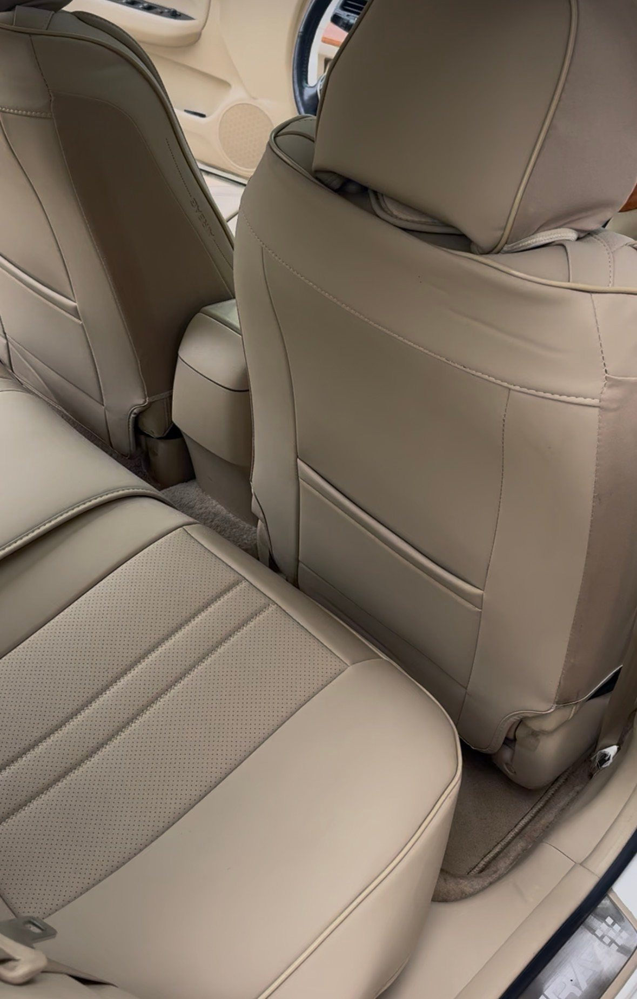

Heavy pet hair removal is available with interior and complete mobile details in Johnson County. Send vehicle photos for an estimate.
When your cabin needs more than a quick vacuum
Pet hair can collect in carpet fibers, seat seams and the spaces between seats. If a normal vacuum pass leaves visible hair behind, include that information when requesting your interior or complete detail. Heavy pet hair removal is an add-on, with its price determined after inspecting your vehicle.
Send the photos that help us quote
Include an overall photo of the cabin and close-ups of the seats, floor and cargo area. Tell us the year, make and model, where your pet usually rides and whether the hair affects one section or the whole vehicle. A wide view helps show the amount of work; a close-up shows the material and how embedded the hair is.
Pair hair removal with the right package
The Cabin Refresh starts at $159 for interior cleaning. The Full Reset starts at $229 and includes the exterior too. Pet hair removal is additional to the selected package and is not an exterior-only add-on. The underlying interior service includes vacuuming, carpet and mat cleaning, surfaces and interior glass.
Prepare for the appointment
Remove pet bedding, toys, belongings and child seats before the visit. Please secure pets away from the work area and provide water and electricity. We can discuss the expected result after seeing the vehicle; we do not promise that every embedded hair or allergy trigger will be eliminated. Between details, a removable pet cover can help contain the next round of loose hair.
Questions about this service
Is pet hair included in the starting price?
Heavy pet hair removal costs extra. Its price is determined after inspection, so send photos before your appointment.
Ready for a cleaner car?
Check the live calendar or text your vehicle details and photos for a quote. Serving Johnson County, Kansas. Water and power access required.